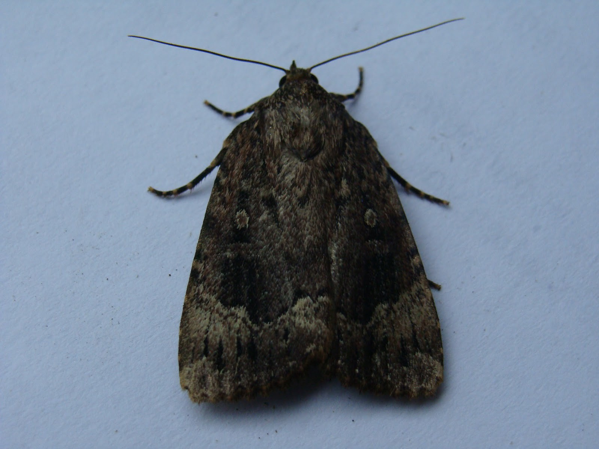
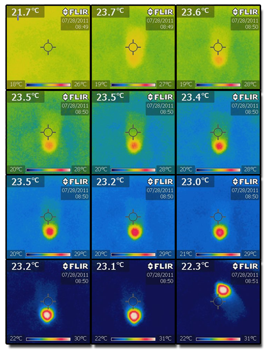

Are Moths Cold-Blooded?
By Charles Xie ✉
Back to Infrared Explorer home page
Listen to a podcast about this article
This is my story with a moth back in 2011 that demonstrates the incredible power of thermal vision as a tool anyone can use to make authentic scientific discoveries. Ten years later, I still find it worth retelling.
Is a moth warm-blooded or cold-blooded? If you google this, some would tell you it is cold-blooded. They are not completely right. This thermography study shows how a moth warms up before it can fly. So at least some part of a moth is warm when it moves. In fact, this is related to thermogenesis: the process of heat production in organisms.

Figure 1: Operophtera brumata? (from Massachusetts)
The moth, shown in Figure 1, was kept in a glass jar. The first infrared (IR) image shows that when it was idle, its body temperature was the same as the ambient temperature. This means that it did not have to lose energy to the environment through heat transfer — a clever way to save energy and hide itself from predators that can sense thermal radiation emitted from preys.

Figure 2: The warm-up of a moth recorded under a FLIR I5 camera
Click HERE for an interactive exploration on Telelab
Before making a move, it needed to warm up its flying muscles (near its head where the wings are attached, called the thorax) to above 30°C. In this observation, the warming process took 1–2 minutes for the captive, as shown by the series of thermal images in Figure 2.
Note that we used the automatic color remapping of the thermal camera, i.e., the heat map was rescaled based on the lowest and highest temperatures detected in the field of view of the camera. As a result, while the moth warmed up and appeared more reddish in the thermal view, the background — by contrast — became more blueish. This, however, does not mean that the temperature of the background had decreased. This automatic remapping might create some confusion, but it is necessary in many cases, especially when you don’t know what to expect in a particular scene. It maximizes the difference by increasing the contrast and, therefore, allows the observer to pick up subtle changes like this one exhibited by the moth. The last image of the series shows that, after the temperature rose to a certain degree, the creature started to move around. In this experiment, it responded quite slowly, possibly because it could have been exhausted from struggling in the jar after it was imprisoned.
The question is then: Why do moths need to warm up the thorax before they can fly?